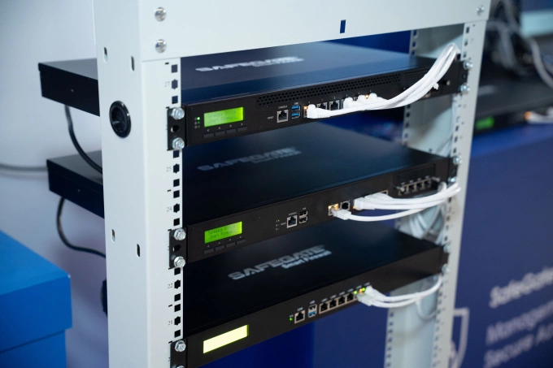

Chính thức: Doanh nghiệp Việt phát triển bộ giải pháp bảo vệ dữ liệu
SafeGate phát triển bộ giải pháp gồm tường lửa, hệ thống quản lý dữ liệu và thiết bị mạng, nhằm ứng phó với tình trạng tin tặc khai thác dữ liệu giá trị cao của các tổ chức, doanh nghiệp.
Theo thống kê của Hiệp hội An ninh mạng quốc gia, trong năm 2025, các hệ thống thông tin tại Việt Nam đối mặt với khoảng 552.000 cuộc tấn công mạng. Hơn một nửa số cơ quan, doanh nghiệp từng ghi nhận chịu tổn hại, cho thấy mức độ rủi ro của các hệ thống tại Việt Nam ở mức cao.
"Những lỗ hổng về hạ tầng, công nghệ đang trở thành những yếu tố tác động tới an ninh quốc gia", ông Ngô Tuấn Anh, CEO SafeGate và Chủ tịch Mạng lưới Đổi mới sáng tạo và chuyên gia An ninh mạng Việt Nam (ViSecurity), cho biết.
Tại sự kiện ngày 12/5, Công ty An ninh mạng thông minh SCS (SafeGate) công bố nhóm sản phẩm an ninh mạng dành cho tổ chức, doanh nghiệp và hệ thống thông tin trọng yếu. Đại diện doanh nghiệp chia sẻ, trong bối cảnh tấn công mạng không ngừng gia tăng về số lượng và mức độ tinh vi, bộ giải pháp mới sẽ góp phần giúp cho các cơ quan tổ chức, doanh nghiệp tuân thủ những quy định về an ninh mạng, an ninh dữ liệu và bảo vệ hệ thống trước các nguy cơ tấn công, rò rỉ dữ liệu.

Giải pháp Safegate Smart Firewall. Ảnh: SafeGate
Trong đó, Với nhu cầu bảo vệ hệ thống, SafeGate Smart Firewall và SafeGate Secure Gateway cung cấp năng lực giám sát, đánh giá các mối nguy theo thời gian thực, phân tích lưu lượng và phát hiện xâm nhập. Hệ thống quản trị tập trung trên nền tảng cloud, giúp đơn giản hóa quá trình triển khai và vận hành, giảm gánh nặng nhân sự công nghệ thông tin và tối ưu chi phí hạ tầng.
Với nhu cầu bảo mật khi chia sẻ dữ liệu, SafeGate DLP giúp các tổ chức, doanh nghiệp kiểm soát và bảo vệ toàn bộ hành trình dữ liệu trong môi trường số, phát hiện và ngăn chặn rò rỉ thông tin nhạy cảm qua thiết bị lưu trữ ngoài, ứng dụng OTT.
SafeGate Data Diode bảo vệ ở cấp vật lý bằng cơ chế truyền dữ liệu một chiều, không thể thay đổi. Nhờ đó, các hệ thống trọng yếu được bảo vệ gần như hoàn toàn cách ly khỏi mạng kém an toàn trong khi vẫn duy trì khả năng nhận dữ liệu phục vụ giám sát và vận hành, phù hợp với hệ thống có yêu cầu bảo mật cao như camera quản lý tập trung, hạ tầng điều khiển, quan trắc, mạng IoT và trung tâm giám sát an ninh mạng (SOC).
Trong khi đó, SafeGate Z-Entry cho phép các thiết bị kết nối với hệ thống nội bộ của tổ chức từ xa một cách bảo mật, áp dụng mô hình Zero Trust Network Access, xác thực định danh bằng chữ ký số và phân quyền chặt. Quản trị viên cũng có quyền ngắt kết nối tức thì đối với thiết bị khi phát hiện nhiễm mã độc, hạn chế nguy cơ lây lan trong hệ thống.
"Khát vọng phát triển ngành của chúng ta là tạo ra những sản phẩm dịch vụ hiện diện ở từng thiết bị của từng người dùng cá nhân, hiện diện ở hệ thống mạng của từng cơ quan, tổ chức, doanh nghiệp và hiện diện ở từng hộ gia đình. Chúng ta sẽ không thể phát triển nhanh và bền vững nếu không có tự chủ chiến lược về mặt công nghệ và các sản phẩm đã cụ thể hóa được tinh thần này", ông Nguyễn Huy Dũng, Ủy viên chuyên trách Ban Chỉ đạo Trung ương về khoa học, công nghệ, đổi mới sáng tạo và chuyển đổi số, nhận định.
Bình luận 3
Trong thời đại chuyển đổi số, việc triển khai mô hình bảo vệ an ninh mạng 4 lớp là rất cần thiết để bảo vệ dữ liệu và hệ thống quốc gia.
Hy vọng kế hoạch này sẽ giúp hạn chế các cuộc tấn công mạng và nâng cao độ an toàn cho các hệ thống thông tin quan trọng.
An ninh mạng ngày càng quan trọng, nên việc phối hợp giữa lực lượng tại chỗ và các đơn vị chuyên nghiệp sẽ tạo ra lớp bảo vệ hiệu quả hơn.